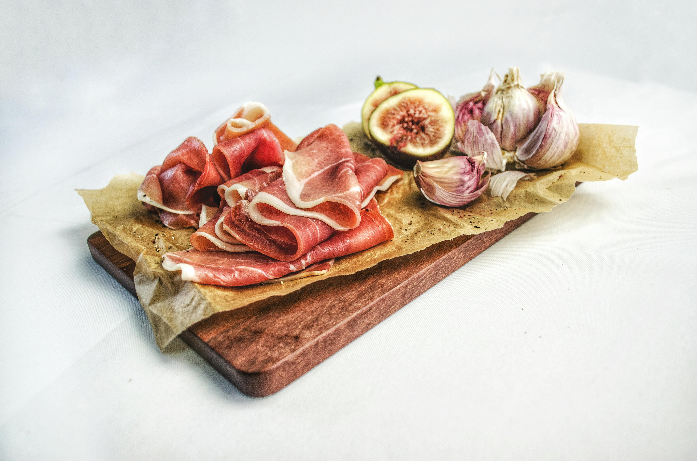

Websit Site Map
This is the websit created by the Card Sort exercise.
My Card Sort Exercise:

Homepage is the face of a website and the first line of defense to attract users, which is of vital importance
It was mentioned in the user story that Jake hopes to "recommend recipes based on the ingredients in the refrigerator", and a function is needed on the homepage to meet his requirements. Through this recommendation system, users can quickly find recipes suitable for their existing ingredients.
I use HTML tags (such as header,nav, main,section,footer etc.) to divide the page content, helping screen reader users clearly understand the layout and content structure of the page. And add appropriate labels for all important interactive elements (such as buttons, forms, etc.), and use aria attributes to further enhance accessibility.
Exquisite food pictures and brightly colored designs,etc.
Using warm language and friendly text, a relaxed and pleasant atmosphere is created, enabling users not only to see delicious food when browsing, but also to feel the warmth and care of the website
The homepage adopts an accordion structure, categorizing recipes of different types in an orderly manner, enabling clients to quickly locate the content they are interested in
The user said, "I hope the website can recommend recipes based on the ingredients in my refrigerator." So I designed a recommendation page that allows users to input existing ingredients, click the "Get Recommendation" button, and the system returns a list of suitable recipes
The input area has a clear label (ingredients), and the pages are easy to use on mobile phones and tablets, and the touch area is large enough
The fresh and cute color scheme, such as the light green, dark green and some blue that I use, helps users relieve their mood and reduce stress.
I use different fonts with appropriate character and line spacing, making the content easy to read and the interface not crowded.
The strong functionality of my website can enhance user stickiness and guide users to click, stay or collect further through recommendation results, thereby driving the overall usage rate of the website
This is some inspiring content!
According to what the user said:
"I often look for some quick cooking methods on Kuaishou, preferably just a microwave oven or an electric rice cooker."
"If the steps are not clear, I will directly close the website."
"I hope to get recommendations based on the ingredients in the refrigerator."
I have designed an ingredient matching function. Just input the ingredients and you can get recommendations
Quick recipe filtering: Supports filtering quick recipes by "Cooking Tools" or "Time".
You can also record the food you cook every day to achieve the effect of motivating yourself
In Recipes, both text and image contents have textual descriptions: Each step picture is accompanied by a textual description, and videos also have brief subtitles.
Use semantic tags: Use (section), (article), etc. to improve readability.
Clear color contrast: The contrast between the font and the background color is high
- Each recipe is presented with a high-quality cover image to arouse appetite and curiosity
- Different recipes are displayed using card-style modules, which are visually neat and easy to click
- The font, icons and button styles are uniform, giving a sense of friendliness and high recognizability
The website that users need is: "To establish a practical, convenient and young user-friendly recipe database and increase the access frequency."
Recipes are the core content of the platform. Through the display of recipes and the learning process, the user's stay time is naturally prolonged. Moreover, recipe cards can be quickly shared through social platforms, bringing more visits to the website.
This is some inspiring content!
- Jake (a 19-year-old college student) :
- Linda (40-year-old mother) :
- David (28 years old Product Manager) :
Sometimes he doesn't know what to do and hopes that the website can recommend or categorize and guide.
The "Contents" page provides clear content classification and navigation, which is helpful for quickly finding the needed content (such as quick dishes, microwave recipes, etc.).
She values the practicality of the recipes and video guidance, and at the same time hopes that the upload process is simple
"Contents" helps her quickly locate entry points such as "Nutritious Dishes", "Video Tutorials", and "Upload Zone", improving efficiency.
He pursues efficiency and likes the function that can filter by time and difficulty
Grouping by "time" and "difficulty" on the "Contents" page can meet his need for quick search.
• Use high-contrast fonts and background colors, as well as clear and focused navigation elements (such as the accordion switch accessible to the keyboard) to ensure that visually impaired users can also use it. The content grouping is logical and consistent, reducing cognitive burden and facilitating all users to quickly find the target area.
Adopt a responsive layout and simple ICONS to ensure comfortable browsing on mobile phones Enhance visual layering through ICONS, color grouping, hover animations, etc., guiding users to explore in depth step by step
The client hopes that users can quickly locate the content on the website, experience a clear navigation structure, and display the ability to organize the content - "Contents" precisely embodies these expectations. It meets the requirements of a clear website organization, expandable content structure (supporting multi-level classification), and the coexistence of visual appeal and functionality.
The user said, "Sometimes I don't know what to do. I just hope the website can recommend recipes based on the ingredients in my fridge." I like having others' comments and uploaded content. So I designed the function of uploading the list of ingredients and recipes.
The upload area uses the combination of (label) and (input type="file"), supports reading by screen readers, and the feedback has "Uploading in..." The states such as "Success" and "failure" are expressed with text prompts and ICONS. When the mouse is dragged into the area, high-contrast borders and auxiliary text appear
During the upload process, there are feedback such as loading animations and upload progress bars to reduce user anxiety
Clear file type prompts: Inform users of the formats they can upload (such as: JPG, PNG, MP4, etc.)
Enhance content diversity and increase user stickiness
Upload - display - browse - Upload again to form a benign interactive ecosystem
This is some inspiring content!
- Jake (college student) :
- Linda (Mother) :
- David (Product Manager) :
He likes recipes with "others' comments", which can help him make decisions and enhance trust.
The community function enables him to see the experiences, misunderstandings and improvement methods of others, reducing the cost of trying and increasing the success rate.
She hopes to "share her signature dishes", but she wants the upload process to be simple.
The community function provides her with a platform to showcase her cooking skills and may also receive communication and feedback from mothers in other families, forming a positive incentive.
He needs a "user rating system" and a rapid decision-making mechanism based on evaluations.
The like, rate, tag and comment functions in the community directly align with his efficiency-oriented behavioral patterns.
- All user-generated content areas should use focused elements and a readable hierarchical structure to facilitate identification by assistive technologies.
- Provide a "Jump to the Comment Section" button to facilitate quick navigation for visually impaired users.
- The comment box should support keyboard input and ARIA tag auxiliary explanations to enhance the accessibility and friendliness of the participation threshold.
- Visually, card-style comment boxes, avatars + names + ratings + timestamps are adopted to enhance authenticity and social interaction, attracting users to participate.
- Motion feedback (such as like animations, comment expansion and collapse, etc.) enhances user participation.
- The customer hopes to enhance user activity and return visit rate. The community is an effective platform for user participation.
- Meeting customers' functional expectations of "supporting users to upload, comment and establish interactions" is also conducive to building brand trust and a loyal user base.
- The community can also help customers observe user preferences and popular trends, providing a basis for content recommendations and product development.
- Jake (college student) :
- Linda (Mother) :
- David (Product Manager) :
Jake hopes that the website is trustworthy and clear. A complete "About Us" page can convey the professionalism and transparency of the website and reduce his sense of distrust.
He doesn't like websites with unclear steps. If the "About Us" page introduces the website's goals, structure, usage methods or contact information, this can indirectly improve the usage efficiency.
She attaches great importance to the "warmth and clarity" of the website. A warm and humanized "About Us" design can enhance her emotional identification with the platform.
If the page mentions the platform's focus on children's nutrition or the concept of healthy family diets, it will enhance her loyalty.
He values efficiency and functional logic. "About Us" clearly explains the website positioning, functional modules, underlying concepts or team advantages, which will enable him to judge more quickly whether the platform is worth using continuously.
Providing technical support or contact information also aligns with his expectations for the product and service.
- Use high-contrast text, concise sentence structures, and adjustable font sizes to enhance readability for users with low vision and cognitive impairments.
- All links (such as social links of team members, contact email addresses, etc.) should have aria-label prompt functions to assist technologies in better explaining the purpose of the content.
- The color combination is gentle, the font is friendly, and the layout has a strong sense of breathing, giving people the first impression of being "trustworthy" and "carefully crafted".
- The presentation of team member avatars or group photos, office environment, and concept phrases can evoke emotional identification.
- Combined with small animations (such as hovering the mouse to enlarge the avatar or smoothly scrolling to the team introduction section), it can enhance the fun and quality.
- If the page contains information such as "Contact Us" or "Join Us", it will help expand the community and cooperation network and support the long-term development goals of customers.
- It is particularly important to meet customers' expectations for a "formal, professional and transparent platform" during the initial stage of website launch or the first visit of users.
This is some inspiring content!